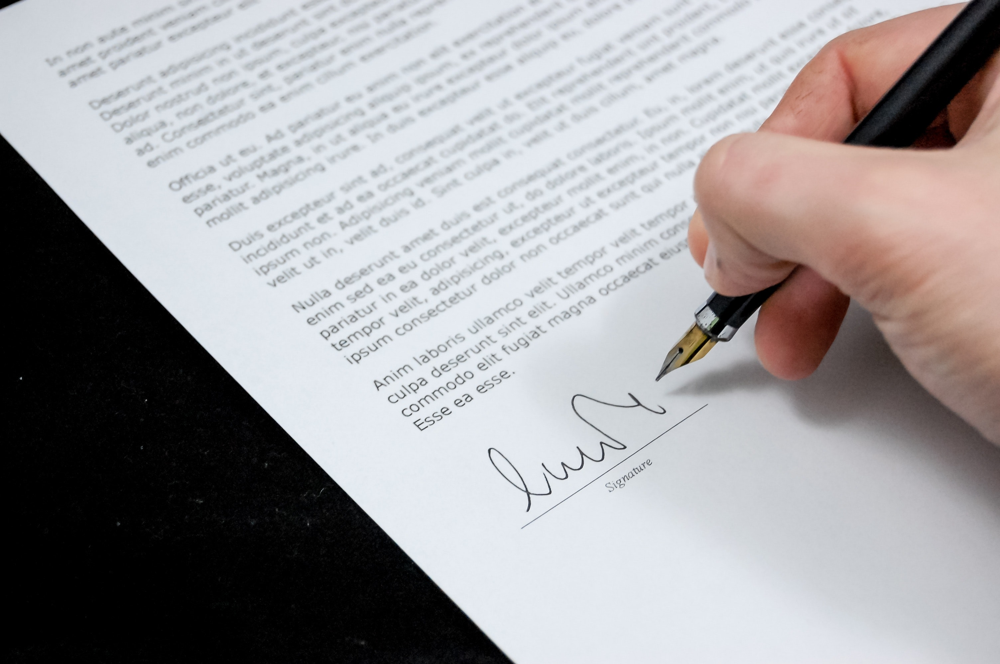

When you are applying for jobs, it's important to know how the job application process works. This step-by-step guide to the job application process includes information on applying for jobs, resumes and cover letters, completing job applications, pre-employment screening and testing, background and reference checks, interviewing, and the hiring process. Follow these steps in order to help organize your job search. If you are at a specific step in the job search process, click on that step for more information.
1. Get Your Resume Ready
 Many companies require a resume and a cover letter in addition to a job application. When you submit a resume with your job application, it is important that your resume is well organized and polished. You also want to be sure that your resume is a match for the job you are applying for. Here is information on resume writing, plus resume examples and templates.
Many companies require a resume and a cover letter in addition to a job application. When you submit a resume with your job application, it is important that your resume is well organized and polished. You also want to be sure that your resume is a match for the job you are applying for. Here is information on resume writing, plus resume examples and templates.
2. Write a Cover Letter
A cover letter is a document that explains why your skills and experiences make a good fit for a job. A cover letter may be required as part of the job application process. If it's optional, I recommend including a cover letter because it's the best way to pitch your case for an interview. Make sure that your cover letter is tailored to the specific job listing. Here is information on how to write a cover letter and what to include in your cover letter, plus cover letter examples and templates.
3. Job Applications
 CYou can apply for jobs online, via email, or in person. No matter what job you are applying for, be sure to follow the company's specific directions for filling out the application.
Read here for a step-by-step guide on how to apply for a job, including how to apply for a job online, how to fill out a job application, how to write job application letters, and tips and advice for applying for jobs.
CYou can apply for jobs online, via email, or in person. No matter what job you are applying for, be sure to follow the company's specific directions for filling out the application.
Read here for a step-by-step guide on how to apply for a job, including how to apply for a job online, how to fill out a job application, how to write job application letters, and tips and advice for applying for jobs.
4. Job Application Screening

Companies often use talent management software (also known as applicant tracking software, or ATS) to recruit, screen, hire, track, and manage applicants for employment. Therefore, your application is likely to be screened to determine if you are a match for the job. The software will match up the information in the job applications that are submitted with the position requirements for the job. Those candidates who are the closest match will be interviewed.
5. Employment Tests

Employers often use tests and other selection procedures to screen applicants for hire. The types of tests and selection procedures utilized include cognitive tests, personality tests, medical examinations, credit checks, and background checks. Some tests are conducted as part of the job application process, and others will take place further along in the hiring process - after the interview and prior to a job offer
6. Interview Process

If you are selected for an interview, you will be invited to talk to a recruiter, hiring manager, or employer on the phone or in person (or both). The company may conduct several interviews prior to offering the leading candidate the job. Some interviews are one-on-one, while others are in small groups. Here is information on how the interview process works at most companies.
7. Hiring Process

From the time you apply for a job until the time you accept a job offer, you will go through a series of steps as you progress through the hiring process. Here's information on each step in the hiring process, including what happens after the job interview if you're a contender for the position.
8. Job Offers

When you receive a job offer, you're close to the end of the process. However, you don't need to accept the job, at least right away, if you're not sure whether or not it is the best opportunity for you. It's important to take the time to carefully evaluate the offer so you are making an educated decision to accept, reject, or renegotiate, the offer. Here's how to evaluate a job offer.
9. New Hire Paperwork

Once you have accepted a job offer, it's time for the new hire paperwork you'll need to complete to get on the payroll. The hiring paperwork you will need to complete includes eligibility to work forms, tax withholding forms, and company specific paperwork. Here's the information you'll need to provide to your new employer.